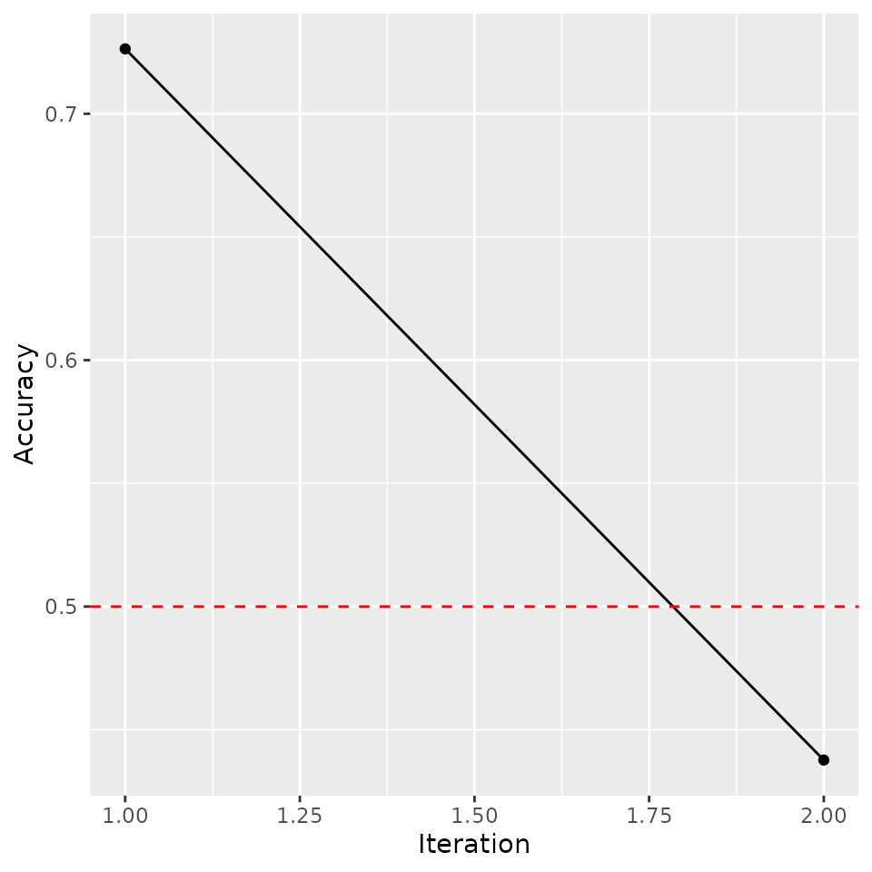
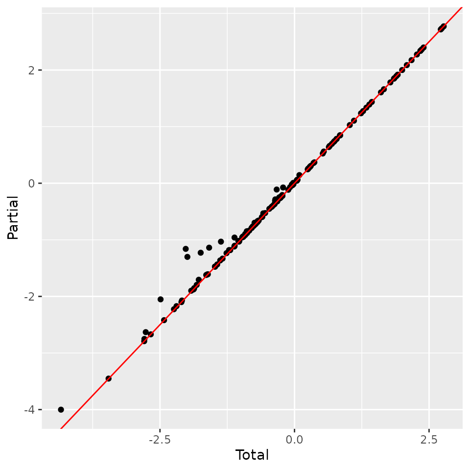
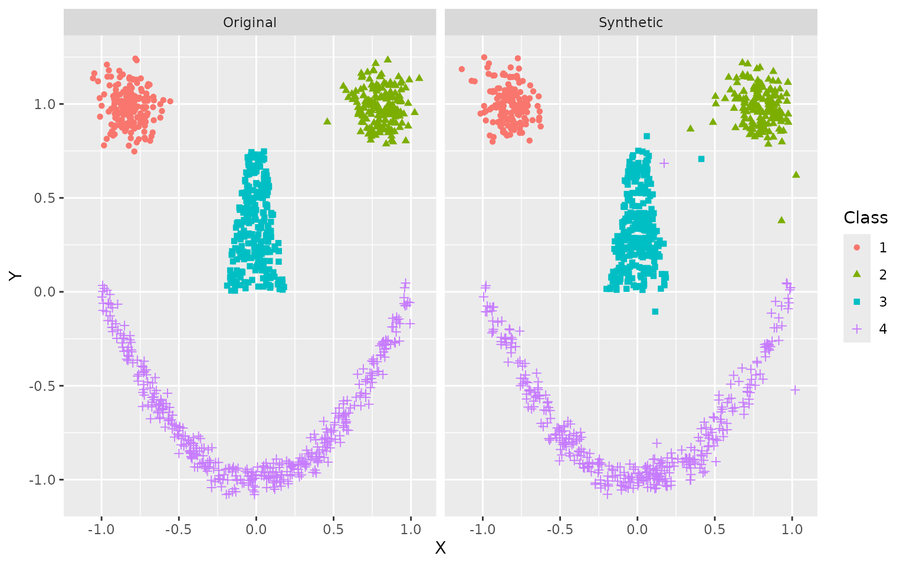
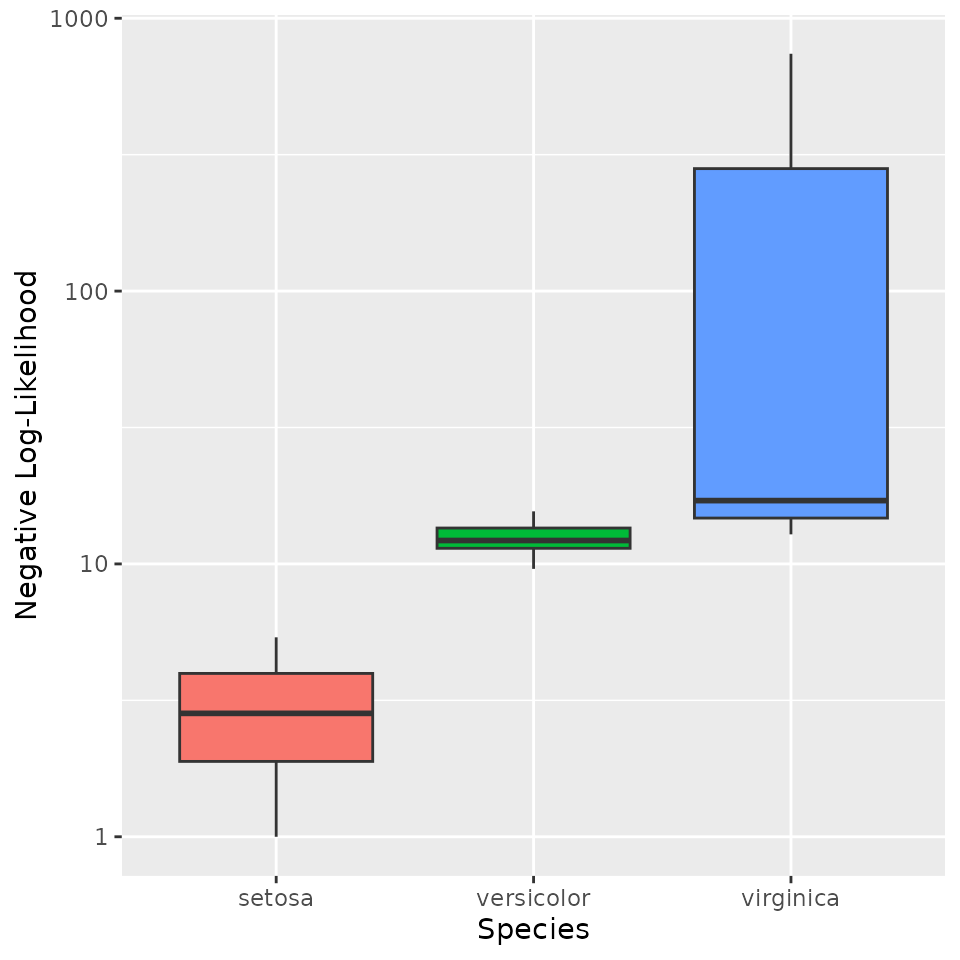
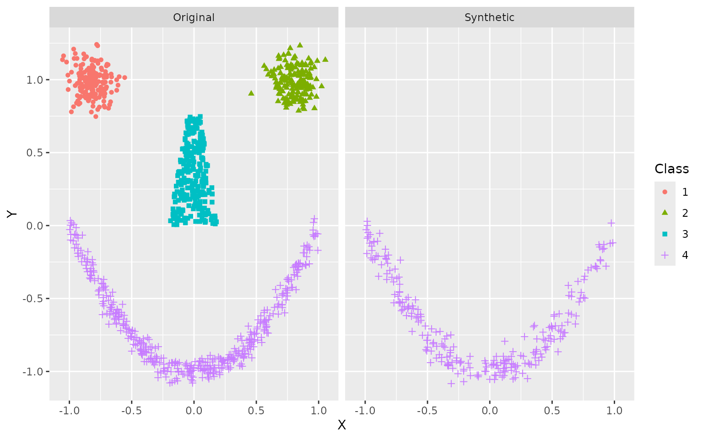

This vignette covers the entire adversarial random forest (ARF) pipeline, from model training to parameter learning, density estimation, and data synthesis.
Adversarial Training
The ARF algorithm is an iterative procedure. In the first instance,
we generate synthetic data by independently sampling from the marginals
of each feature and training a random forest (RF) to distinguish
original from synthetic samples. If accuracy is greater than
(where delta is a user-controlled tolerance parameter,
generally set to 0), we create a new dataset by sampling from the
marginals within each leaf and training another RF classifier. The
procedure repeats until original and synthetic samples cannot be
reliably distinguished. With the default verbose = TRUE,
the algorithm will print accuracy at each iteration.
# Load libraries
library(arf)
library(data.table)
library(ggplot2)
# Set seed
set.seed(123, "L'Ecuyer-CMRG")
# Train ARF
arf_iris <- adversarial_rf(iris)
#> Iteration: 0, Accuracy: 76.09%
#> Iteration: 1, Accuracy: 40.33%
#> Warning: executing %dopar% sequentially: no parallel backend registeredThe printouts can be turned off by setting
verbose = FALSE. Accuracy is still stored within the
arf object, so you can evaluate convergence after the fact.
The warning appears just once per session. It can be suppressed by
setting parallel = FALSE or registering a parallel backend
(more on this below).
# Train ARF with no printouts
arf_iris <- adversarial_rf(iris, verbose = FALSE)
# Plot accuracy against iterations (model converges when accuracy <= 0.5)
tmp <- data.frame('Accuracy' = arf_iris$acc,
'Iteration' = seq_len(length(arf_iris$acc)))
ggplot(tmp, aes(Iteration, Accuracy)) +
geom_point() +
geom_path() +
geom_hline(yintercept = 0.5, linetype = 'dashed', color = 'red') 
We find a quick drop in accuracy following the resampling procedure, as desired. If the ARF has converged, then resulting splits should form fully factorized leaves, i.e. subregions of the feature space where variables are locally independent.
ARF convergence is asymptotically guaranteed as
(see Watson
et al., 2023, Thm. 1). However, this has no implications for finite
sample performance. In practice, we often find that adversarial training
completes in just one or two rounds, but this may not hold for some
datasets. To avoid infinite loops, users can increase the slack
parameter delta or set the max_iters argument
(default = 10). In addition to these failsafes,
adversarial_rf uses early stopping by default
(early_stop = TRUE), which terminates training if
factorization does not improve from one round to the next. This is
recommended, since discriminator accuracy rarely falls much lower once
it has increased.
For density estimation tasks, we recommend increasing the default
number of trees. We generally use 100 in our experiments, though this
may be suboptimal for some datasets. Likelihood estimates are not very
sensitive to this parameter above a certain threshold, but larger models
incur extra costs in time and memory. We can speed up computations by
registering a parallel backend, in which case ARF training is
distributed across cores using the ranger package. Much
like with ranger, the default behavior of
adversarial_rf is to compute in parallel if possible. How
exactly this is done varies across operating systems. The following code
works on Unix machines.
# Register cores - Unix
library(doParallel)
registerDoParallel(cores = 2)Windows requires a different setup.
# Register cores - Windows
library(doParallel)
cl <- makeCluster(2)
registerDoParallel(cl)In either case, we can now execute in parallel.
# Rerun ARF, now in parallel and with more trees
arf_iris <- adversarial_rf(iris, num_trees = 100)
#> Iteration: 0, Accuracy: 85.67%
#> Iteration: 1, Accuracy: 40.67%The result is an object of class ranger, which we can
input to downstream functions.
Parameter Learning
The next step is to learn the leaf and distribution parameters using forests for density estimation (FORDE). This function calculates the coverage, bounds, and pdf/pmf parameters for every variable in every leaf. This can be an expensive computation for large datasets, as it requires operations, where is the number of trees, is the data dimensionality, and is the sample size. Once again, the process is parallelized by default.
# Compute leaf and distribution parameters
params_iris <- forde(arf_iris, iris)Default behavior is to use a truncated normal distribution for
continuous data (with boundaries given by the tree’s split parameters)
and a multinomial distribution for categorical data. We find that this
produces stable results in a wide range of settings. You can also use a
uniform distribution for continuous features by setting
family = 'unif', thereby instantiating a piecewise constant
density estimator.
# Recompute with uniform density
params_unif <- forde(arf_iris, iris, family = 'unif')
#> Warning in forde(arf_iris, iris, family = "unif"): Density estimation with
#> uniform distribution requires finite bounds. Resetting finite_bounds to
#> "local".This method tends to perform poorly in practice, and we do not
recommend it. The option is implemented primarily for benchmarking
purposes. Alternative families, e.g. truncated Poisson or beta
distributions, may be useful for certain problems. Future releases will
expand the range of options for the family argument.
The alpha and epsilon arguments allow for
optional regularization of multinomial and uniform distributions,
respectively. These help prevent zero likelihood samples when test data
fall outside the support of training data. The former is a pseudocount
parameter that applies Laplace
smoothing within leaves, preventing unobserved values from being
assigned zero probability unless splits explicitly rule them out. In
other words, we impose a flat Dirichlet prior and report posterior
probabilities rather than maximum likelihood estimates. The latter is a
slack parameter on empirical bounds that expands the estimated extrema
for continuous features by a factor of
.
Compare the results of our original probability estimates for the
Species variable with those obtained by adding a
pseudocount of
.
# Recompute with additive smoothing
params_alpha <- forde(arf_iris, iris, alpha = 0.1)
# Compare results
head(params_iris$cat)
#> Key: <f_idx, variable>
#> f_idx variable val prob NA_share
#> <int> <char> <char> <num> <num>
#> 1: 1 Species virginica 1 0
#> 2: 2 Species virginica 1 0
#> 3: 3 Species virginica 1 0
#> 4: 4 Species virginica 1 0
#> 5: 5 Species setosa 1 0
#> 6: 6 Species setosa 1 0
head(params_alpha$cat)
#> Key: <f_idx, variable>
#> f_idx variable val prob NA_share
#> <int> <char> <char> <num> <num>
#> 1: 1 Species virginica 0.93939394 0
#> 2: 1 Species setosa 0.03030303 0
#> 3: 1 Species versicolor 0.03030303 0
#> 4: 2 Species virginica 0.91304348 0
#> 5: 2 Species setosa 0.04347826 0
#> 6: 2 Species versicolor 0.04347826 0Under Laplace smoothing, extreme probabilities only occur when the splits explicitly demand it. Otherwise, all values shrink toward a uniform prior. Note that these two data tables may not have exactly the same rows, as we omit zero probability events to conserve memory. However, we can verify that probabilities sum to unity for each leaf-variable combination.
# Sum probabilities
summary(params_iris$cat[, sum(prob), by = .(f_idx, variable)]$V1)
#> Min. 1st Qu. Median Mean 3rd Qu. Max.
#> 1 1 1 1 1 1
summary(params_alpha$cat[, sum(prob), by = .(f_idx, variable)]$V1)
#> Min. 1st Qu. Median Mean 3rd Qu. Max.
#> 1 1 1 1 1 1The forde function outputs a list of length 6, with
entries for (1) continuous features; (2) categorical features; (3) leaf
parameters; (4) variable metadata; (5) factor levels; and (6) data input
class.
params_iris
#> $cnt
#> Key: <f_idx, variable>
#> f_idx variable min max mu sigma NA_share
#> <int> <char> <num> <num> <num> <num> <num>
#> 1: 1 Petal.Length -Inf Inf 5.933333 0.20816660 0
#> 2: 1 Petal.Width 2.45 Inf 2.500000 0.01041469 0
#> 3: 1 Sepal.Length -Inf Inf 6.733333 0.45092498 0
#> 4: 1 Sepal.Width -Inf Inf 3.400000 0.17320508 0
#> 5: 2 Petal.Length -Inf Inf 5.250000 0.21213203 0
#> ---
#> 10484: 2621 Sepal.Width 3.30 3.45 3.400000 0.02209289 0
#> 10485: 2622 Petal.Length -Inf 4.20 1.400000 0.10000000 0
#> 10486: 2622 Petal.Width -Inf 0.25 0.200000 0.03124407 0
#> 10487: 2622 Sepal.Length 4.65 5.55 5.266667 0.20816660 0
#> 10488: 2622 Sepal.Width 3.45 3.55 3.500000 0.02082938 0
#>
#> $cat
#> Key: <f_idx, variable>
#> f_idx variable val prob NA_share
#> <int> <char> <char> <num> <num>
#> 1: 1 Species virginica 1.0000000 0
#> 2: 2 Species virginica 1.0000000 0
#> 3: 3 Species virginica 1.0000000 0
#> 4: 4 Species virginica 1.0000000 0
#> 5: 5 Species setosa 1.0000000 0
#> ---
#> 2919: 2618 Species versicolor 0.4615385 0
#> 2920: 2619 Species setosa 1.0000000 0
#> 2921: 2620 Species setosa 1.0000000 0
#> 2922: 2621 Species setosa 1.0000000 0
#> 2923: 2622 Species setosa 1.0000000 0
#>
#> $forest
#> Key: <tree, leaf>
#> f_idx tree leaf cvg
#> <int> <int> <int> <num>
#> 1: 1 1 6 0.02000000
#> 2: 2 1 10 0.01333333
#> 3: 3 1 13 0.04000000
#> 4: 4 1 16 0.03333333
#> 5: 5 1 21 0.02000000
#> ---
#> 2618: 2618 100 49 0.08666667
#> 2619: 2619 100 57 0.02000000
#> 2620: 2620 100 58 0.04666667
#> 2621: 2621 100 60 0.04000000
#> 2622: 2622 100 61 0.02000000
#>
#> $meta
#> variable class family decimals
#> <char> <char> <char> <int>
#> 1: Sepal.Length numeric truncnorm 1
#> 2: Sepal.Width numeric truncnorm 1
#> 3: Petal.Length numeric truncnorm 1
#> 4: Petal.Width numeric truncnorm 1
#> 5: Species factor multinom NA
#>
#> $levels
#> variable val
#> <char> <char>
#> 1: Species setosa
#> 2: Species versicolor
#> 3: Species virginica
#>
#> $input_class
#> [1] "data.frame"These parameters can be used for a variety of downstream tasks, such as likelihood estimation and data synthesis.
Likelihood Estimation
To calculate log-likelihoods, we pass params on to the
lik function, along with the data whose likelihood we wish
to evaluate. For total evidence queries (i.e., those spanning
all variables and no conditioning events), it is faster to also include
arf in the function call.
# Compute likelihood under truncated normal and uniform distributions
ll <- lik(params_iris, iris, arf = arf_iris)
ll_unif <- lik(params_unif, iris, arf = arf_iris)
# Compare average negative log-likelihood (lower is better)
-mean(ll)
#> [1] 0.3196718
-mean(ll_unif)
#> [1] -7.291452Note that the piecewise constant estimator does considerably worse in this experiment.
The lik function can also be used to compute the
likelihood of some partial state, i.e. a setting in which some
but not all variable values are specified. Let’s take a look at that
iris dataset:
head(iris)
#> Sepal.Length Sepal.Width Petal.Length Petal.Width Species
#> 1 5.1 3.5 1.4 0.2 setosa
#> 2 4.9 3.0 1.4 0.2 setosa
#> 3 4.7 3.2 1.3 0.2 setosa
#> 4 4.6 3.1 1.5 0.2 setosa
#> 5 5.0 3.6 1.4 0.2 setosa
#> 6 5.4 3.9 1.7 0.4 setosaSay we want to calculate sample likelihoods using only continuous
data. That is, we provide values for the first four variables but
exclude the fifth. In this case, the model will have to marginalize over
Species:
# Compute likelihoods after marginalizing over Species
iris_without_species <- iris[, -5]
ll_cnt <- lik(params_iris, iris_without_species)
# Compare results
tmp <- data.frame(Total = ll, Partial = ll_cnt)
ggplot(tmp, aes(Total, Partial)) +
geom_point() +
geom_abline(slope = 1, intercept = 0, color = 'red')
We find that likelihoods are almost identical, with slightly higher likelihood on average for partial samples. This is expected, since they have less variation to model.
In this example, we have used the same data throughout. This may lead
to overfitting. With sufficient data, it is preferable to use a training
set for adversarial_rf, a validation set for
forde, and a test set for lik. Alternatively,
we can set the oob argument to TRUE for either
of the latter two functions, in which case computations are performed
only on out-of-bag (OOB) data. These are samples that are randomly
excluded from a given tree due to the bootstrapping subroutine of the RF
classifier. Note that this only works when the dataset x
passed to forde or lik is the same one used to
train the arf. Recall that a sample’s probability of being
excluded from a single tree is
.
When using oob = TRUE, be sure to include enough trees so
that every observation is likely to be OOB at least a few times.
Data Synthesis
For this experiment, we use the smiley simulation from
the mlbench package, which allows for easy visual
assessment. We draw a training set of
and simulate
synthetic datapoints. Resulting data are plotted side by side.
# Simulate training data
library(mlbench)
x <- mlbench.smiley(1000)
x <- data.frame(x$x, x$classes)
colnames(x) <- c('X', 'Y', 'Class')
# Fit ARF
arf_smiley <- adversarial_rf(x, mtry = 2)
#> Iteration: 0, Accuracy: 84.35%
#> Iteration: 1, Accuracy: 39.5%
# Estimate parameters
params_smiley <- forde(arf_smiley, x)
# Simulate data
synth <- forge(params_smiley, n_synth = 1000)
# Compare structure
str(x)
#> 'data.frame': 1000 obs. of 3 variables:
#> $ X : num -0.841 -0.911 -0.91 -0.743 -0.863 ...
#> $ Y : num 0.874 0.926 1.051 0.918 1.157 ...
#> $ Class: Factor w/ 4 levels "1","2","3","4": 1 1 1 1 1 1 1 1 1 1 ...
str(synth)
#> 'data.frame': 1000 obs. of 3 variables:
#> $ X : num -0.3742 -0.0897 0.0322 0.0271 -0.8529 ...
#> $ Y : num -0.786 0.371 0.548 0.546 -0.247 ...
#> $ Class: Factor w/ 4 levels "1","2","3","4": 4 3 3 3 4 4 3 2 3 3 ...
# Put it all together
x$Data <- 'Original'
synth$Data <- 'Synthetic'
df <- rbind(x, synth)
# Plot results
ggplot(df, aes(X, Y, color = Class, shape = Class)) +
geom_point() +
facet_wrap(~ Data)
The general shape is clearly recognizable, even if some stray samples are evident and borders are not always crisp. This can be improved with more training data.
Conditioning
ARFs can also be used to compute likelihoods and synthesize data
under conditioning events that specify values or ranges for input
features. For instance, say we want to evaluate the likelihood of
samples from the iris dataset under the condition that
Species = 'setosa'. There are several ways to encode
evidence, but the simplest is to pass a partial observation.
# Compute conditional likelihoods
evi <- data.frame(Species = 'setosa')
ll_conditional <- lik(params_iris, query = iris_without_species, evidence = evi)
# Compare NLL across species (shifting to positive range for visualization)
tmp <- iris
tmp$NLL <- -ll_conditional + max(ll_conditional) + 1
ggplot(tmp, aes(Species, NLL, fill = Species)) +
geom_boxplot() +
scale_y_log10() +
ylab('Negative Log-Likelihood') +
theme(legend.position = 'none')
#> Warning: Removed 11 rows containing non-finite outside the scale range
#> (`stat_boxplot()`).
As expected, measurements for non-setosa samples appear much less likely under this conditioning event.
The partial observation method of passing evidence requires users to
specify unique feature values for each conditioning variable. A more
flexible alternative is to construct a data frame of conditioning
events, potentially including inequalities. For example, we may want to
calculate the likelihood of samples given that
Species = 'setosa' and
Petal.Width > 0.3.
# Data frame of conditioning events
evi <- data.frame(Species = "setosa",
Petal.Width = ">0.3")
evi
#> Species Petal.Width
#> 1 setosa >0.3We can also define intervals:
evi <- data.frame(Species = "setosa",
Petal.Width = "(0.3,0.5)")
evi
#> Species Petal.Width
#> 1 setosa (0.3,0.5)Resulting likelihoods will be computed on the condition that all queries are drawn from setosa flowers with petal width on the interval .
A final method for passing evidence is to directly compute a
posterior distribution on leaves. This could be useful for particularly
complex conditioning events for which there is currently no inbuilt
interface, such as polynomial constraints or arbitrary propositions in
disjunctive normal form. In this case, we just require a data frame with
columns for f_idx and wt. If the latter does
not sum to unity, the distribution will be normalized with a
warning.
# Drawing random weights
evi <- data.frame(f_idx = params_iris$forest$f_idx,
wt = rexp(nrow(params_iris$forest)))
evi$wt <- evi$wt / sum(evi$wt)
head(evi)
#> f_idx wt
#> 1 1 4.483113e-04
#> 2 2 3.997981e-05
#> 3 3 2.888576e-05
#> 4 4 8.726013e-04
#> 5 5 4.433602e-04
#> 6 6 3.536210e-05Each of these methods can be used for conditional sampling as well.
# Simulate class-conditional data for smiley example
evi <- data.frame(Class = 4)
synth2 <- forge(params_smiley, n_synth = 250, evidence = evi)
# Put it all together
synth2$Data <- 'Synthetic'
df <- rbind(x, synth2)
# Plot results
ggplot(df, aes(X, Y, color = Class, shape = Class)) +
geom_point() +
facet_wrap(~ Data)
By conditioning on Class = 4, we restrict our sampling
to the smile itself, rather than eyes or nose.
Computing conditional expectations is similarly straightforward.
expct(params_smiley, evidence = evi)
#> X Y
#> 1 -0.01177414 -0.6728099These are the average coordinates for the smile above.
Data imputation
ARFs can be used to impute missing values in datasets. This can be done either on a one-shot basis, in which case we plug in the (conditional) expectation of the feature(s) with missing values; or as a multiple imputation routine, in which case we sample values from the relevant (conditional) distribution.
For instance, consider the palmer penguins dataset, which includes several missing values.
# Load palmer penguins dataset
library(palmerpenguins)
#>
#> Attaching package: 'palmerpenguins'
#> The following objects are masked from 'package:datasets':
#>
#> penguins, penguins_raw
head(penguins)
#> # A tibble: 6 × 8
#> species island bill_length_mm bill_depth_mm flipper_length_mm body_mass_g
#> <fct> <fct> <dbl> <dbl> <int> <int>
#> 1 Adelie Torgersen 39.1 18.7 181 3750
#> 2 Adelie Torgersen 39.5 17.4 186 3800
#> 3 Adelie Torgersen 40.3 18 195 3250
#> 4 Adelie Torgersen NA NA NA NA
#> 5 Adelie Torgersen 36.7 19.3 193 3450
#> 6 Adelie Torgersen 39.3 20.6 190 3650
#> # ℹ 2 more variables: sex <fct>, year <int>We can fill in the NA’s in row 4 with their expected value,
conditional on the non-NA values (species and
island) as follows:
# Single imputation
penguins_imp <- impute(penguins)
head(penguins_imp)
#> # A tibble: 6 × 8
#> species island bill_length_mm bill_depth_mm flipper_length_mm body_mass_g
#> <fct> <fct> <dbl> <dbl> <int> <int>
#> 1 Adelie Torgersen 39.1 18.7 181 3750
#> 2 Adelie Torgersen 39.5 17.4 186 3800
#> 3 Adelie Torgersen 40.3 18 195 3250
#> 4 Adelie Torgersen 39 18.5 189 3717
#> 5 Adelie Torgersen 36.7 19.3 193 3450
#> 6 Adelie Torgersen 39.3 20.6 190 3650
#> # ℹ 2 more variables: sex <fct>, year <int>Alternatively, we can perform multiple imputation to get a better sense of the range of plausible values in these conditional distributions.